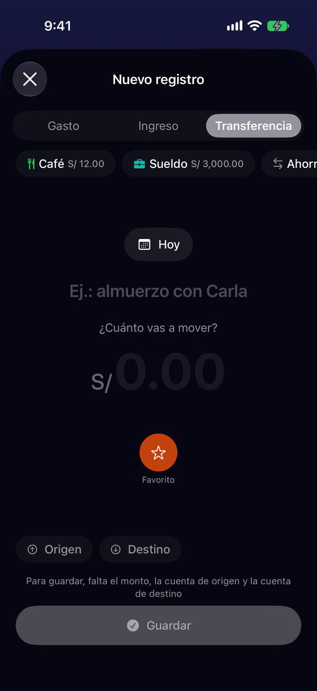
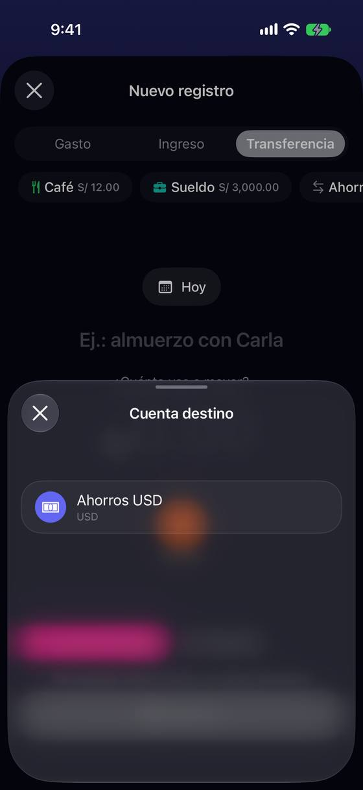
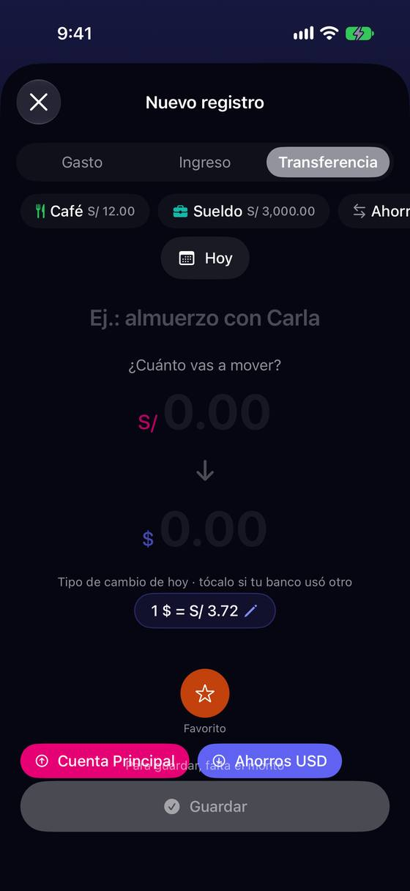
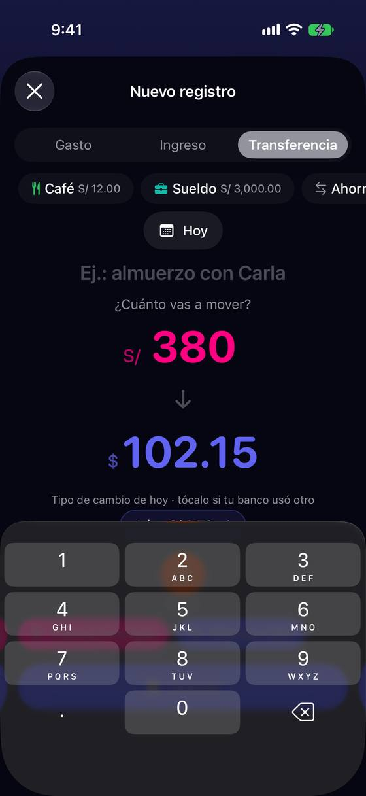
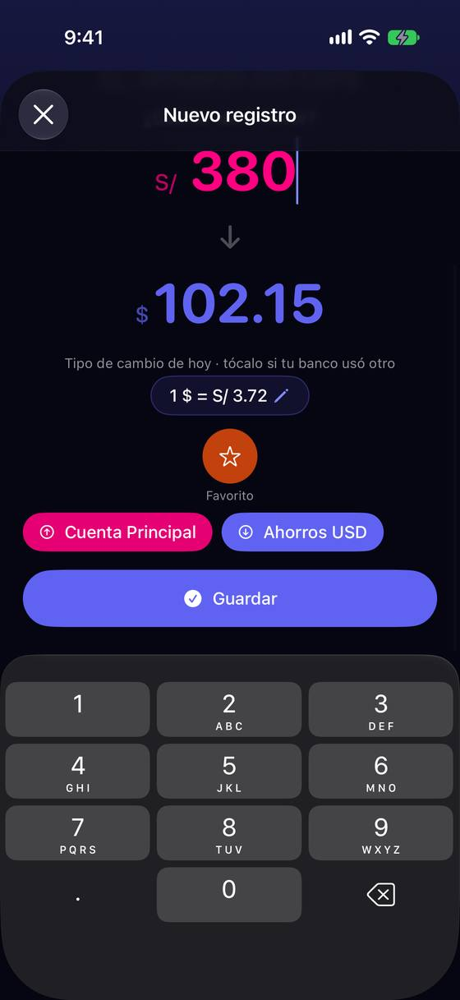

En una transferencia entre monedas, dos importes sin nombre y las cuentas lejos de su importe
Hoy
Capturas del simulador (app de origin/2.3, semillas de prueba). Pasos hoy: 5 toques (tipo, origen + fila, destino + fila) + importe + «Guardar».





De dónde sale
- Captura Captura 13: «S/ 0.00 ↓ $ 0.00», «Tipo de cambio de hoy · tócalo si tu banco usó otro», «1 $ = S/ 3.72»; los chips de cuenta, abajo y montados sobre la línea de «Guardar».
- Captura Captura 12: con dos cuentas, Origen y Destino vacíos.
- Código
TransferAmountInputView.swift:56-152: los dos importes solo llevan nombre para VoiceOver («Monto origen», «Monto destino»); editar el destino recalcula la tasa. - Código Sin conexión no hay aviso: la tasa se queda como estaba (
NewTransactionViewModel, carga de tasa); la cápsula solo dice la fecha si no es de hoy.
Las opciones
De 3 a 5 alternativas con el mismo caso. Desliza cada recorrido; el anillo cian marca dónde toca Ana.
Cada importe dice de qué cuenta sale y a cuál llega
Los chips de origen y destino suben y se funden con su importe: «Sale de Cuenta Principal ▾ · S/ 380.00» y «Llega a Ahorros USD ▾ · US$ 102.15». Tocar el nombre cambia la cuenta; tocar el importe, lo edita.
A favor
- Lo que se lee de arriba abajo es la transferencia entera: de dónde, cuánto, a dónde, cuánto.
- Desaparece la fila de chips de abajo, que hoy se monta sobre «Guardar».
En contra
- Cambia la forma de la transferencia respecto a gasto e ingreso (chips abajo).
- Nombres de cuenta largos: hay que cortar con elegancia.
«¿Cuánto llegó?»: el banco manda, la tasa se deduce
Se escribe lo que salió y, debajo, se pregunta «¿Cuánto llegó a Ahorros USD?» con la tasa de hoy como sugerencia. Si Ana escribe lo que dice su banco (US$ 100.00), la app muestra la tasa real que usó: «Tu banco: 1 US$ = S/ 3.80 · hoy 3.72».
A favor
- Pide el dato que la persona tiene a mano (el extracto), no una tasa.
- La diferencia con la tasa de hoy queda a la vista.
En contra
- Un campo más que rellenar si no le importa la exactitud.
- Hay que dejar claro que el sugerido es solo una sugerencia.
Primero las cuentas, después los importes
En transferencia, el formulario abre preguntando «¿De qué cuenta a qué cuenta?» con dos selectores grandes. Solo con las dos elegidas aparecen los importes: uno si comparten moneda, dos si no.
A favor
- Nunca enseña dos importes vacíos sin contexto.
- El orden natural de una transferencia.
En contra
- Una transferencia en la misma moneda paga un paso más.
- Rompe la simetría con gasto e ingreso (importe primero).
La tasa dice de dónde sale y de qué día
Sin mover nada: la cápsula de la tasa dice siempre su fuente y fecha («Tasa de referencia de hoy, 9:00» o «del 6 nov, sin conexión») y la da en el sentido de la transferencia («S/ 1 = US$ 0.269» si sale en soles).
A favor
- Cambio pequeño en una sola pieza.
- Cubre el caso sin conexión, que hoy no se dice.
En contra
- No resuelve que los importes no digan su cuenta.
- Más texto en una cápsula que ya se corta con texto grande.
Lado a lado
La última pantalla de cada recorrido, frente a hoy.
Comparación
| Opción | Pasos para el caso (maqueta) | Esfuerzo | Riesgo | Reabre |
|---|---|---|---|---|
| Hoy | 5 toques (tipo, origen + fila, destino + fila) + importe + «Guardar». | — | — | — |
| T1 · Cada importe dice de qué cuenta sale y a cuál llega | igual que hoy (5 toques + teclas) | medio | bajo | — |
| T2 · «¿Cuánto llegó?»: el banco manda, la tasa se deduce | +1 importe si se corrige | bajo-medio | bajo | — |
| T3 · Primero las cuentas, después los importes | igual que hoy | medio | medio | — |
| T4 · La tasa dice de dónde sale y de qué día | igual que hoy | bajo | bajo | — |
Lente de perfiles
Perfiles simulados, no entrevistas Los siete perfiles de la revisión del usuario nuevo, usados como lentes. riesgo alto de trabarse · medio · bajo.
| Perfil | Hoy | T1 | T2 | T3 | T4 |
|---|---|---|---|---|---|
| P1 · Migrante de Excel | copia del extracto sin saber dónde | — | copia del extracto | un paso más | — |
| P2 · Principiante abrumado | dos importes vacíos | se lee como una frase | dos importes | guiado | sigue sin saber cuál es cuál |
| P3 · Anotador rápido que no lee | — | — | uno más | — | — |
| P4 · Experto de otra app | lo deduce | — | — | — | — |
| P5 · Llega por una invitación de grupo | — | — | — | — | — |
| P6 · Varias monedas y tarjeta | su caso diario | su caso, claro | la tasa de su banco | — | sabe de cuándo es la tasa |
| P7 · Texto grande, a veces en iPad | cápsula larga | dos líneas por importe | — | filas grandes | cápsula larga |
Recomendación: T1
Que cada importe lleve su cuenta resuelve la duda «¿cuál es cuál?» y de paso quita la fila de chips que hoy pisa «Guardar». T2 es su complemento natural (el importe de llegada como pregunta, con la tasa deducida) y T4 añade la fecha de la tasa, barato. T3 ordena pero alarga la transferencia de una sola moneda.
Qué decide Jürgen
- ¿Importes con su cuenta (T1)?
- ¿El de llegada se pregunta y la tasa se deduce (T2)?
- ¿La tasa dice su fuente y fecha, también sin conexión (T4)?
Revisión por vistas 2.3 · Nuevo registro. Maquetas en HTML con datos ficticios: no son la app. Pasos contados sobre las maquetas; los de «Hoy», en el simulador o en el código citado.